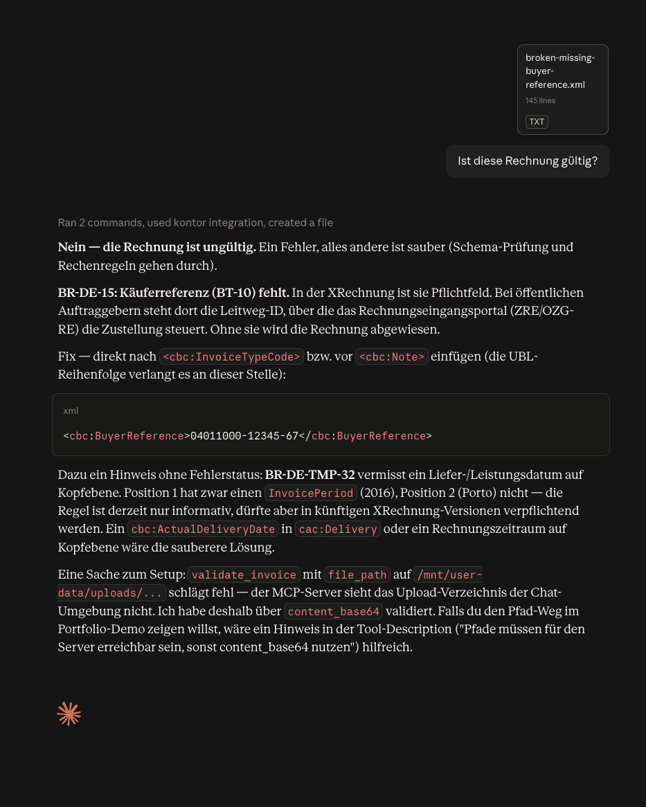
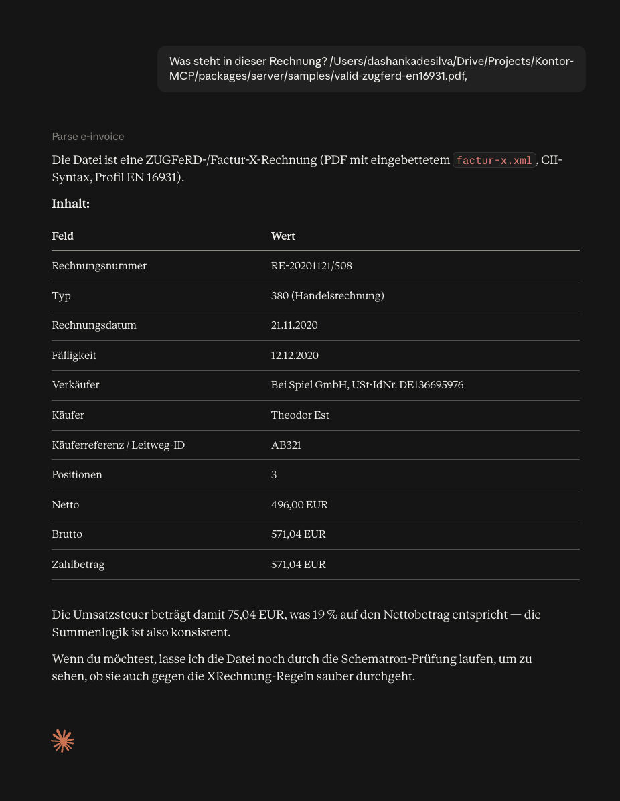
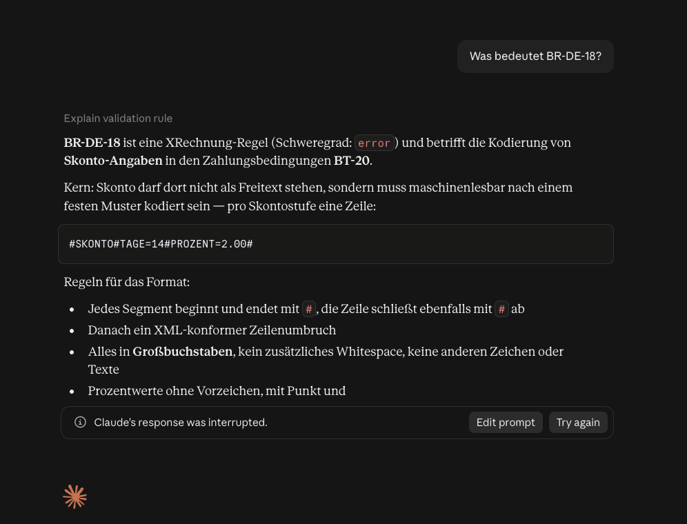

- Document
- KONTOR-DoC
- Edition
- 1.0.4
- Issued
- 2026-08-26
- Licence
- Apache-2.0
Declaration of Conformity
Kontor MCP is an open-source server that gives AI assistants — Claude Desktop, Claude Code, any MCP client — the ability to parse, validate, audit, explain, generate and convert German and EU electronic invoices (XRechnung, ZUGFeRD / Factur-X, EN 16931) using the official KoSIT and CEN rule sets, entirely offline. No invoice data ever leaves the machine.
io.github.DashankaNadeeshanDeSilva/kontor-mcp
in the Official MCP Registry at registry.modelcontextprotocol.io.
Attestations
-
Listed in the Official MCP Registry Namespace ownership proven via GitHub OIDC; npm package ownership via
mcpName; container image via theio.modelcontextprotocol.server.namelabel.active · API record -
Published on npm with build provenance
@kontor-mcp/rules,core,server,client, released only by a tag-triggered GitHub Actions workflow through npm trusted publishing (OIDC, no long-lived tokens); Sigstore attestations on every version.provenance · npm -
Conformant with the KoSIT XRechnung validator Same verdict and the same findings as KoSIT validator 1.6.3 on the complete XRechnung 3.0.2 test suite (86 official files + 3 fixtures). Re-checked as a CI gate on every commit.89 / 89 · report
-
Generated ZUGFeRD PDFs pass PDF/A-3b and Mustang checks veraPDF 1.30.2 profile PDF/A-3b, zero violations; Mustang CLI 2.26.0 accepts every generated hybrid invoice.6 / 6 · 6 / 6
-
Zero network calls at runtime: proven, not promised A test blocks sockets, DNS, TLS,
http(s)andfetchacross every tool, resource and prompt and asserts zero attempts; CI additionally audits inside a--network nonecontainer. No accounts, no API keys, no telemetry.0 attempts · test -
Continuously verified across platforms 357 tests; Ubuntu, macOS and Windows × Node 20 and 22; lint, PDF/A, conformance, security-audit and Docker smoke jobs on every push.357 tests · CI
-
Open source under Apache-2.0 Bundled third-party artefacts keep their licences: KoSIT (Apache-2.0), CEN EN 16931 (EUPL-1.2), Liberation Fonts (OFL 1.1), all with provenance and checksums.
Why an offline e-invoice server matters now
Germany's Wachstumschancengesetz turns electronic invoicing from an option into an obligation. An e-invoice is not a PDF: it is XML governed by EN 16931 (about 160 business terms and more than 100 business rules) in two syntaxes (UBL 2.1 and CII D16B), narrowed by the German profile XRechnung (KoSIT), or embedded as a hybrid PDF/A-3 (ZUGFeRD / Factur-X).
An invoice that fails those rules can jeopardise input-VAT deduction, and the validator's language ([BR-DE-15] Buyer reference MUST be provided) means nothing to the people who receive it. At the same time, invoices carry personal data, bank details and prices, so GDPR and procurement policy push processing on-premises, while the existing tooling for AI agents is either a cloud API wrapper or a partial, hand-rolled validator.
Kontor MCP closes that gap: authoritative (the official Schematron rule sets, unmodified), fully offline, and complete for agent workflows, from a plain-language verdict with fix hints to generating a valid invoice from structured data.
Mandate timeline (Germany, B2B)
- B2G suppliers must submit XRechnung with a Leitweg-IDFederal portals ZRE / OZG-RE
- Every business must be able to receive EN 16931 e-invoicesIn force
- Businesses with turnover above €800,000 must issue e-invoicesPrior-year turnover
- All businesses must issue e-invoices for domestic B2BPaper and plain PDF no longer permitted
Dates and thresholds as recorded in the bundled legal timeline (primary sources, last verified 2026-08-25). Informational, not legal advice.
What the server exposes
Eight MCP tools, four resource families and three prompts. Every tool takes and returns Zod-validated structured content plus a human summary; findings carry the official rule identifier, a DE/EN explanation and a fix hint.
| Tool | Purpose | Effect |
|---|---|---|
validate_invoice | XSD + official EN 16931 / XRechnung rules + plausibility checks; KoSIT-equivalent verdict | read-only |
audit_invoice | One-call audit with an accept / review / reject recommendation | read-only |
parse_invoice | Detect the format (UBL, CII, ZUGFeRD PDF) and return the EN 16931 semantic model | read-only |
explain_rule | Explain any rule id (BR-*, BR-DE-*, BR-CO-*…) with DE/EN text and a fix hint | read-only |
check_obligations | Who must do what, from when, under the German mandate, with sources | read-only |
list_capabilities | Formats, bundled standard versions, knowledge-base stats, sovereignty statement | read-only |
generate_invoice | Structured data → validated XRechnung 3.0 UBL or ZUGFeRD 2.3 / Factur-X PDF/A-3 (EN16931, BASIC, EXTENDED profiles) | writes file |
convert_invoice | Extract XML from a ZUGFeRD PDF, convert UBL ↔ CII, render an HTML preview | writes file |
Resources
kontor://samples/{name} · kontor://reference/rules · kontor://reference/codelists/{list} · kontor://reference/cheatsheet
Prompts
audit-incoming-invoice · draft-supplier-rejection · create-invoice-interview
How it runs
Two transports from one binary. stdio for desktop assistants: the client starts the server as a child process, nothing listens on the network. Streamable HTTP for shared or containerised deployments: an Express endpoint bound to loopback, bearer-token protected, one session per Mcp-Session-Id. Requires Node ≥ 20; no Java, no native modules.
- Claude Desktop Settings → Developer → Edit Config, add the block on the right, quit and reopen. Then ask: "Ist diese Rechnung gültig?" with a local file path.
- Claude Code
claude mcp add kontor -- npx -y @kontor-mcp/server - Any MCP client point it at
npx -y @kontor-mcp/server(stdio) or run the container and connect tohttp://127.0.0.1:3333/mcp.
npx -y @kontor-mcp/server{
"mcpServers": {
"kontor": {
"command": "npx",
"args": ["-y", "@kontor-mcp/server"]
}
}
}docker run -d -p 127.0.0.1:3333:3333 \
-e KONTOR_AUTH_TOKEN="$(openssl rand -hex 24)" \
ghcr.io/dashankanadeeshandesilva/kontor-mcpnpx -y -p @kontor-mcp/client kontor-agent audit invoice.xmlIn Claude Desktop, offline

validate_invoice on an invoice missing its buyer reference: verdict UNGÜLTIG, BR-DE-15 explained in German with the Leitweg-ID fix.
parse_invoice on a ZUGFeRD PDF: embedded CII XML extracted, EN 16931 profile detected, totals and parties summarised.
explain_rule for BR-DE-18: the mandated #SKONTO#TAGE=n#PROZENT=n.nn# payment-terms format, from the bundled rule knowledge base.43-second recording of the three scenes above in Claude Desktop, network disabled. Earlier build (v0.1); the tool surface is unchanged.
What the server guarantees
- No runtime network accessAll rule sets, schemas, code lists and fonts are bundled with provenance and SHA-256 checksums. Enforced by test and by a no-network CI container.
- Stateless; nothing stored or loggedInvoice payloads are never written to disk or logs unless
KONTOR_LOG_PAYLOADSis explicitly enabled. - Hardened XML parsingDTDs and external entities disabled on every parse (XXE, billion-laughs), depth and size caps, path hygiene, PDF bytes treated as untrusted.
- Exact money arithmeticAll amounts use
decimal.js; floating point is never used for totals, VAT or rounding checks. - HTTP mode defence in depthBearer token with constant-time comparison, Origin allow-list, Host validation against DNS rebinding, loopback bind by default, session cap and 30-minute idle expiry. TLS terminates at your reverse proxy.
- Supply chainTag-triggered releases only; npm trusted publishing with Sigstore provenance; multi-arch image built in CI, non-root, ~70 MB.
Annex B — Bundled standards
| Artefact | Version |
|---|---|
| XRechnung specification / CIUS (KoSIT) | 3.0.2 |
| XRechnung Schematron (KoSIT), run unmodified | 2.5.0 |
| KoSIT validator configuration | 2026-01-31 |
| CEN EN 16931 Schematron | 1.3.16 |
| UBL 2.1 and CII D16B XML schemas | — |
| EN 16931 code lists with DE/EN names | 13 |
| Rule knowledge base entries (generated + curated) | 1,642 + 50 |
Kontor plausibility rules (KONTOR-PLAUS-*) | 22 |
| ZUGFeRD / Factur-X output profiles | 2.3 · EN16931, BASIC, EXTENDED |
Schematron is compiled to XSLT/SEF and executed with Saxon-JS; schemas via xmllint-wasm; PDF/A-3 via pdf-lib. Every artefact's source, version, date, licence and checksum is recorded in PROVENANCE.md.
Kontor MCP validates and explains e-invoices; it does not provide legal or tax advice. XRechnung is a standard of the German Koordinierungsstelle für IT-Standards (KoSIT); ZUGFeRD is a standard of FeRD; the Model Context Protocol and its registry are projects of the MCP community. Kontor MCP is not affiliated with or endorsed by any of them.